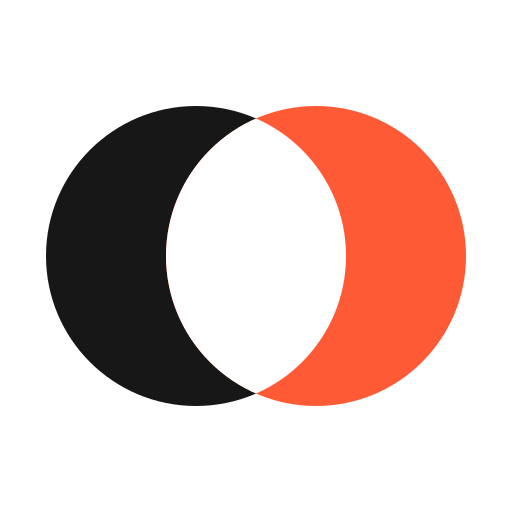
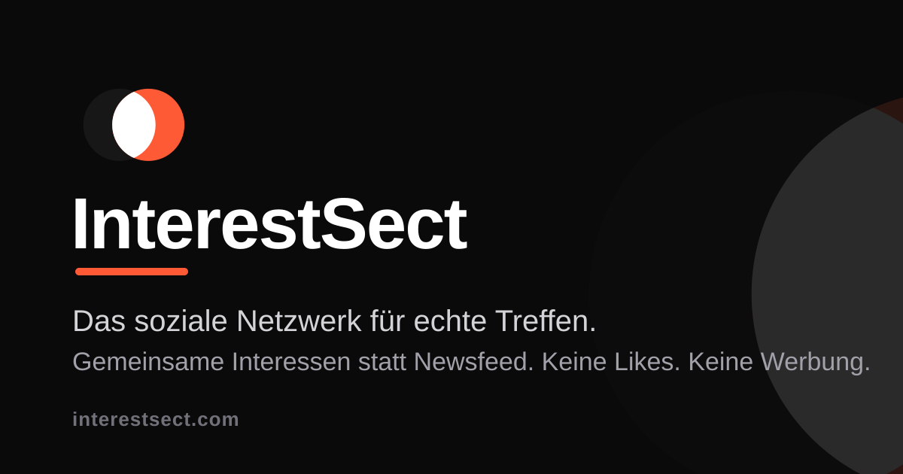
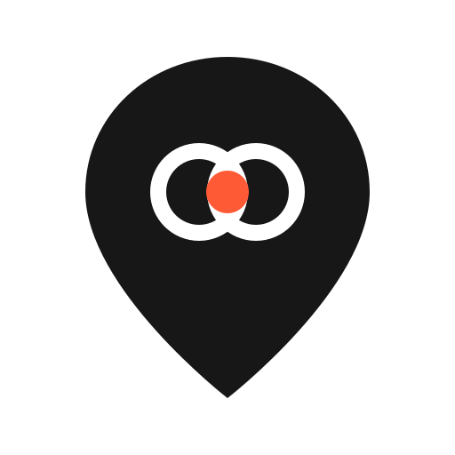
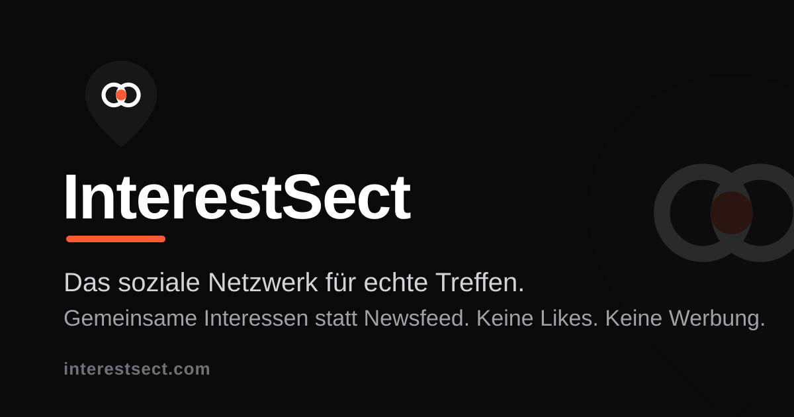
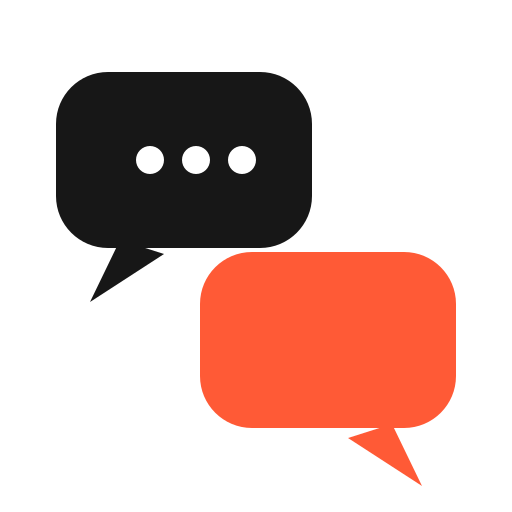
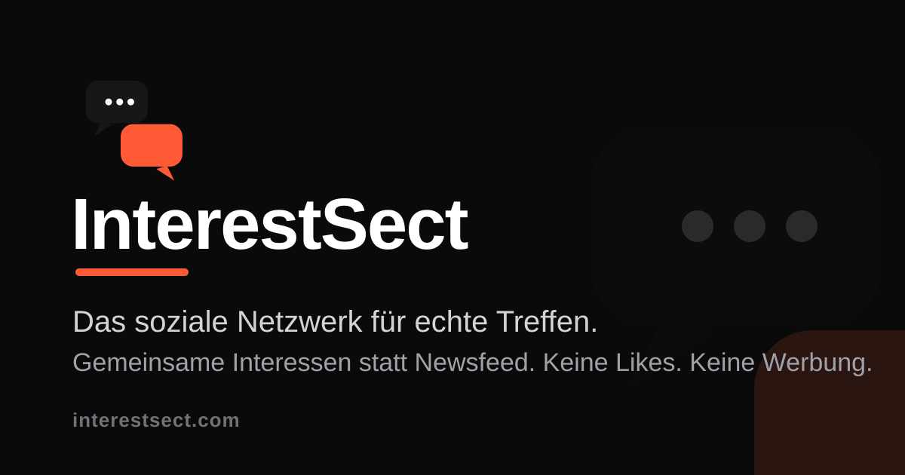
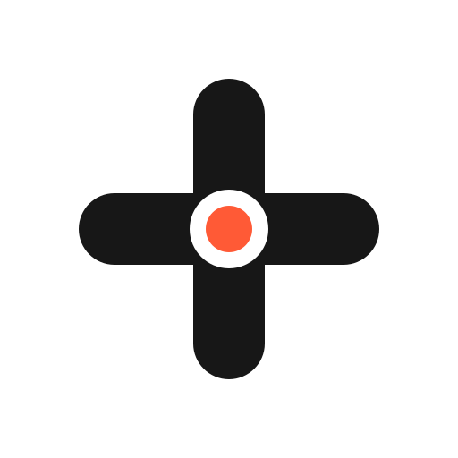
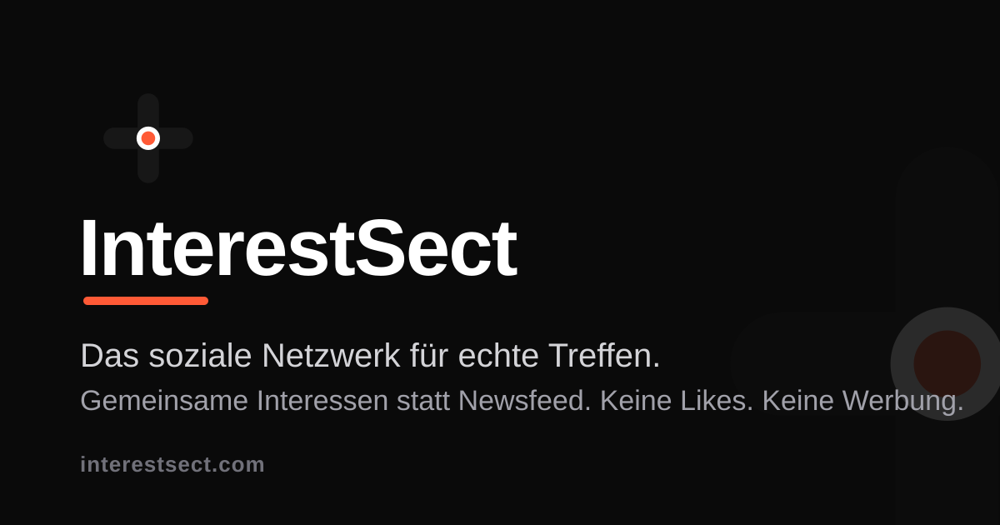

WhatsApp zeigt beim Teilen nicht das Favicon, sondern das Open-Graph-Bild (og:image, 1200×630). Unten je Vorschlag: Icon als Kachel (hell/dunkel/Akzent), in Favicon-Größen (48/32/16 px), als Browser-Tab (hell/dunkel) und die WhatsApp-Linkvorschau mit passendem OG-Bild. Akzentfarbe hier: Koralle #FF5A36 — auf Anfrage auch in Smaragd oder Rein-Violett.
Zwei Kreise = zwei Menschen/Interessen. Die weiße Linse ist die Schnittmenge — exakt das, was „InterestSect" bedeutet. Funktional, leicht merklich, funktioniert bis 16 px.


Map-Pin mit kleiner Schnittmenge inside: verbindet „echte Treffen" und „gemeinsame Interessen" — passt zur Karten-Funktion der App. Innenleben verschwindet unter 32 px, Pin bleibt stark.


Zwei überlappende Sprechblasen: die Kontaktaufnahme, der Kern des Produkts. Warm und einladend — aber thematisch näher an Messenger-Apps als am Interessen-Fokus.


Zwei Balken kreuzen sich, im Zentrum der Akzentpunkt: „Wir treffen uns hier." Reduzierteste Form — maximale Lesbarkeit bis 16 px, aber weniger spezifisch als 1 und 2.

